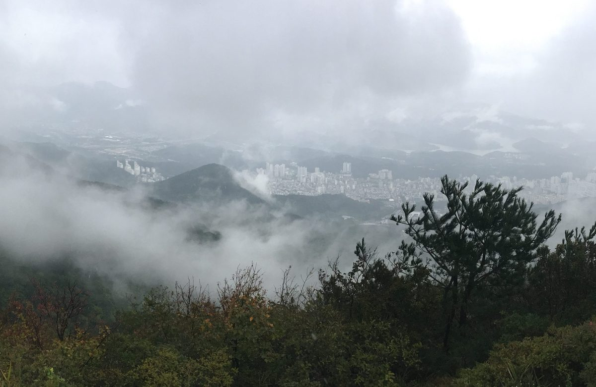

부산 시민사회·종교계, 시민이 이끄는 에너지 공공개발 범시민운동 협약

2024년 3월 14일 금정구서 공동추진 협약식…부산에너지시민위원회 준비위원회 꾸려
부산 환경·에너지 시민단체와 종교단체가 2024년 3월 14일 금정구 남산동 생태문화공간 살리에서 '제4섹터 방식 부산형 시민에너지 공공개발' 범시민운동을 함께 벌이기로 협약했다. (사)기후변화에너지대안센터, 부산불교환경연대, (사)초록지붕 등이 참여했고, 부산시민햇빛에너지협동조합·부산경제사회적협동조합연합회 등은 '제4섹터 그룹'으로 협약 당사자가 됐다. 제4섹터 방식은 사회적기업이 공공개발을 이끌고 정부·지자체, 민간기업, 비영리단체가 함께 참여하는 구조다. 참여 단체들은 공공 유휴부지 활용, 35만 가구에 3kW 이상씩 공급할 수 있는 전력 개발, 개발이익의 주민 수익화를 우선 목표로 정하고, 운동을 맡을 「부산에너지시민위원회 준비위원회」를 출범시켰다.
시민에너지 관점
참여 단체들은 35만 가구에 3kW 이상씩 공급할 전력을 시민 손으로 개발하겠다는 목표를 내걸었다. 부산시 주도의 에너지공사가 무산된 상황에서 시민사회가 개발 주체가 될 수 있느냐는 의문이 따르지만, 덴마크 미델그룬덴처럼 시민협동조합이 대형 해상풍력 지분 절반을 가진 예도 있다. 관건은 선언이 아니라 공공 유휴부지와 자금을 실제로 확보하는 일로 보인다. 협약 단계의 운동이 실행으로 넘어가도록 지자체와 의회의 제도적 뒷받침이 따라야 한다.
출처: 인저리타임 2024-03-15 조송현 원문 보기
釜山市民社会与宗教界签署协议，发起市民主导的能源公共开发运动
2024年3月14日在金井区签署共同推进协议，成立釜山能源市民委员会筹备委员会
釜山环境、能源领域的市民团体和宗教团体于2024年3月14日在金井区南山洞生态文化空间Sali签署协议，决定共同开展"第四部门方式釜山型市民能源公共开发"全市运动。参与者包括气候变化能源替代中心、釜山佛教环境连带、绿色屋顶等，釜山市民阳光能源合作社、釜山经济社会合作社联合会等则以"第四部门组"身份成为协议当事方。第四部门方式是由社会企业主导公共开发，政府和地方政府、民间企业、非营利团体共同参与的结构。参与团体将活用公共闲置用地、开发足以为35万户各供应3kW以上的电力、让居民分享开发收益列为优先目标，并成立了负责运动的"釜山能源市民委员会筹备委员会"。
市民能源视角
参与团体提出，要由市民之手开发足以为35万户各供应3kW以上的电力。在釜山市主导的能源公社落空之后，人们会质疑市民社会能否成为开发主体，但也有丹麦米德尔格伦登那样由市民合作社持有大型海上风电一半股份的先例。关键似乎不在宣言，而在于真正获得公共闲置用地和资金。为使协议阶段的运动进入实施，地方政府和议会应提供制度支持。
来源: Injurytime 2024-03-15 Cho Song-hyun 查看原文
Busan civic and religious groups sign pact for a citizen-led public energy development campaign
Signing in Geumjeong-gu on March 14, 2024 launches a preparatory committee for the Busan Energy Citizens' Committee
Environmental and energy civic groups and religious organizations in Busan signed an agreement on March 14, 2024, at Sali, an eco-cultural space in Namsan-dong, Geumjeong-gu, to jointly run a citywide campaign for "Fourth Sector" citizen energy public development in Busan. Participants included the Climate Change Energy Alternative Center, the Busan Buddhist Environmental Solidarity and Green Roof, while groups such as the Busan Citizens' Solar Energy Cooperative and the Busan federation of social cooperatives joined as a "Fourth Sector group" party to the pact. Under the Fourth Sector approach, social enterprises lead public development with government, private companies and nonprofits taking part. The groups set priority goals of using idle public land, developing enough power to supply 350,000 households with at least 3kW each, and turning development gains into income for residents, and launched a preparatory committee for the Busan Energy Citizens' Committee to run the campaign.
Citizen Energy View
The groups set a goal of developing, by citizens' own hands, enough power to supply 350,000 households with at least 3kW each. With the city-led energy corporation abandoned, some question whether civil society can be the developer, yet there are cases like Denmark's Middelgrunden, where a citizens' cooperative owns half of a large offshore wind farm. The real test appears to be not declarations but actually securing idle public land and funding. Local government and council support through rules and policy should follow so that a campaign at the agreement stage can move into practice.
Source: Injurytime 2024-03-15 Cho Song-hyun Read the original